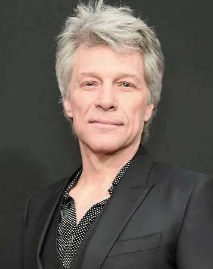

Una banda icónica que ha dejado una marca indeleble en la industria musical con su estilo distintivo y letras emotivas.
Reconocidos por su habilidad para crear melodías cautivadoras, han logrado conectar con audiencias globales, ofreciendo una experiencia sonora única que trasciende géneros y generaciones.
Imagine Dragons
Una banda versátil que fusiona rock, pop y electrónica para crear una experiencia musical única e inolvidable.
Con su distintivo enfoque en la mezcla de géneros, han logrado cautivar a audiencias de todo el mundo, entregando una combinación emocionante de sonidos que deja una impresión duradera en la escena musical contemporánea.
Artistas Invitados

Jon Bon Jovi
Un talentoso músico solista, Jon Bon Jovi ha conquistado escenarios internacionales con su música cautivadora.
Su destreza musical y su voz única lo han convertido en una figura destacada en la escena musical, dejando una huella perdurable en el panorama artístico a nivel mundial.
Indio Solari
Un virtuoso en su instrumento y con una voz única, El Indio Solari ha conquistado el corazón de audiencias en todo el mundo.
Su destreza musical y su estilo vocal distintivo lo posicionan como una figura influyente en la escena musical, dejando una marca perdurable en el panorama artístico internacional.
DJs Invitados
Martin Garrix
Un maestro de las mezclas, Martin Garrix, hará vibrar a la audiencia con sus sets llenos de energía.
Su habilidad para crear experiencias musicales envolventes lo ha catapultado como una figura destacada en la escena electrónica, llevando su talento a escenarios internacionales y cautivando a audiencias de todo el mundo.
Skrillex
Un experto en crear atmósferas envolventes, Skrillex, te transportará a otro mundo a través de la música electrónica.
Con su maestría en la producción, ha consolidado su posición como una figura influyente en la escena musical, ofreciendo experiencias sonoras únicas que cautivan a audiencias de todo el mundo.
David Guetta
David Guetta, un maestro en la creación de atmósferas envolventes, te transportará a otro mundo a través de su música electrónica.
Reconocido por su habilidad para mezclar ritmos cautivadores, Guetta ha dejado una marca duradera en la escena musical, elevando la experiencia auditiva y llevando la emoción a audiencias globales con sus sets emocionantes y envolventes.